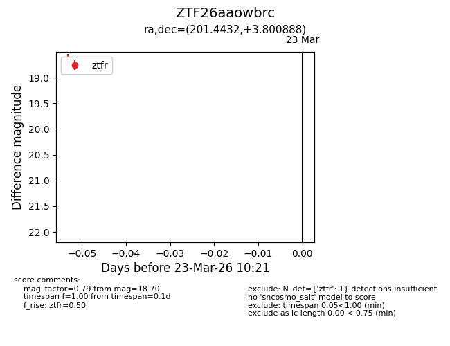
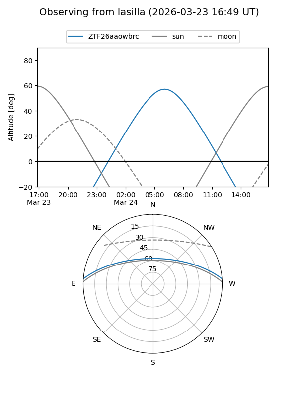
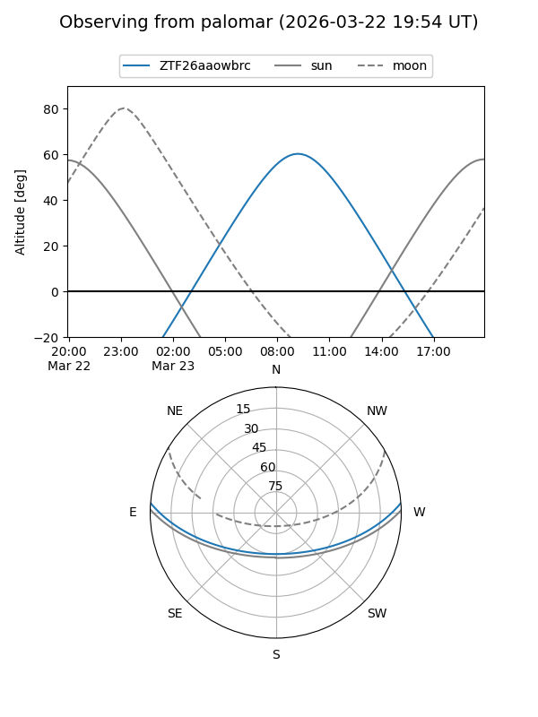

ZTF26aaowbrc
Target ZTF26aaowbrc at 2026-03-23 10:23
Aliases and brokers:
FINK: link
Lasair: link
ALeRCE: link
alt names
ZTF26aaowbrc (ztf,fink_ztf)
Coordinates:
equatorial (ra, dec) = 201.4432,+3.80089
equatorial (HMS+DMS) = 13:25:46.36,+03:48:03.20
galactic (l, b) = (323.7884,+65.27290)
Flags:
Photometry:
last ztfr=18.70
1 ztfr detections
Lightcurve

Visibility


Additional plots